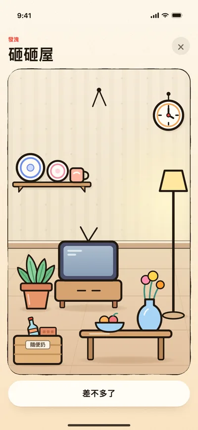
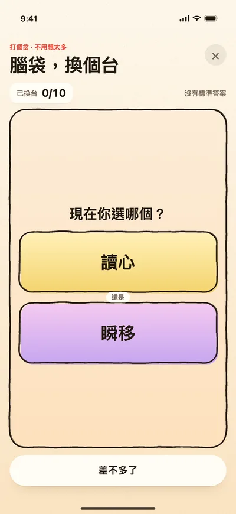
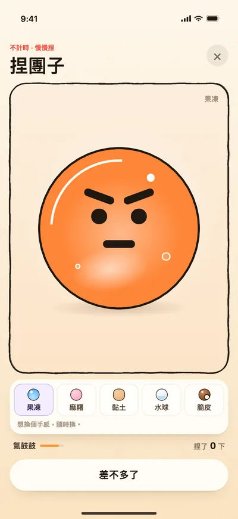
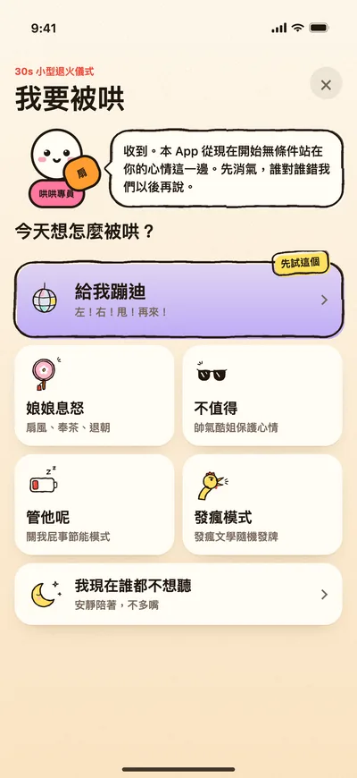
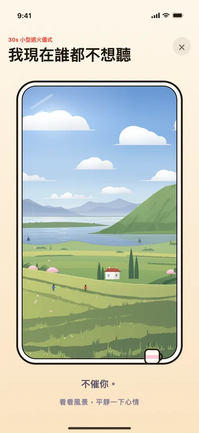

01 / 06
切掉煩惱
手指一劃，把腦內彈幕切成兩半。
看到哪句煩，就往哪句劃一刀；切開的碎塊還能接著切。也能寫自己的話，一次最多五句。
◆玩法/Games
10 個消氣解壓小遊戲、6 種哄法，外加寫下來、消氣日曆和怒氣帳單
開啟不氣了，先給現在的火氣報個數，再挑一條路：我想發洩、別讓我想了、哄哄我。每個小遊戲幾十秒，玩完再報一次數，看看降了多少。下面的截圖都是 App 裡的真實介面。
◆Mode 01/發洩
先把這口氣狠狠幹掉。
01 / 06
手指一劃，把腦內彈幕切成兩半。
看到哪句煩，就往哪句劃一刀；切開的碎塊還能接著切。也能寫自己的話，一次最多五句。

02 / 06
把那件破事寫上去，一下一下砸碎。
點一下是普通一擊，按住再鬆開是蓄力砸，砸到最後整句話一起炸開。砸完往下一拉，就進了砸砸屋。

03 / 06
一整間客廳，隨你砸。
點哪裡錘哪裡，按住更狠；筐裡的東西隨便扔。電視能推，茶几能掀，層板一掃全下來。

04 / 06
戳破一串會彈跳的壞情緒。
戳！戳！戳！不要講道理。

05 / 06
把腦內彈窗拖進破事專用垃圾桶。
拖進垃圾桶，別跟它講理。念頭越脹越大，塞滿了垃圾桶會打嗝。

06 / 06
吵架時被扣的帽子，一張張親手撕掉。
捏住一角，撕掉。前後左右都貼滿了，轉著團子撕；也能寫自己的話貼上去再撕，一次最多五句。
◆Mode 02/轉移注意
腦袋先切個台。

01 / 05
用無意義二選一強行打斷越想越氣。
早睡還是熬夜？別想了，選！

02 / 05
讓眼睛去現實世界巡邏一圈。
照著題目在身邊找一樣東西，找到了點一下。不用拍照，不用證明。

03 / 05
把桌面小混亂拖回它們的小窩。
筆、發票、橡皮……各回各的盒子。

04 / 05
電子功德入帳，殺氣餘額下降。
輕輕敲，狠狠退火。

05 / 05
按一按、捏一捏，看它慢慢彈回來。
按住捏，鬆手彈一下就回來；果凍、麻糬、黏土、水球、脆皮五種料隨時換。
◆Mode 03/被哄
我現在不想講道理。


◆Extra/不玩的時候
+01
氣頭上想說的話，先寫給自己看，存進日曆。本來想發給誰的，可以順手選個冷靜時間（5、10 或 30 分鐘），到點了再決定還發不發。不氣了沒有傳送功能，一句都不會替你發出去。
+02
記的不是這個月生了幾次氣，而是你把自己拉回來了幾次。緩過來的那天掛一位值班專員；晚上 6 點後沒人惹你，可以蓋一枚晴天章；月底還有一張獎狀。沒有連續打卡。
+03
一輪結束，給這件破事留個案底：點幾下「犯了什麼事」，想補一句就補一句。每個月出一張帳單，能存成圖。
+04
見過的值班專員都收在這裡，還有節日限定章和幾個隱藏版。隱藏版得自己撞見。
+05
不氣的時候玩：生氣天氣、吵架職業、戀愛依附，結果能存成圖。都是拿來玩的，不是心理測評。
+06
輪到你去哄人的時候，首頁可以切到「哄她版」。
想看每一版加了什麼，翻更新記錄；怎麼用、資料存在哪裡，見使用與支援。